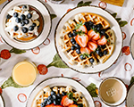

Våra recept
Valnötspesto

En krämig och smakrik pesto med valnötter som passar perfekt till pasta.
Osso Buco

En klassisk italiensk gryta med kalvlägg, tomater och vitt vin.
Grönsaksröra med örter

En fräsch grönsaksröra med smak av färska örter och citron.
Äggmacka Deluxe

En lyxig äggmacka med avokado och krispiga grönsaker.
Fräsch Grönsallad

En enkel och fräsch grönsallad med en syrlig dressing.
Våfflor med kaffe
Nygräddade våfflor serverade med färska bär och en kopp kaffe.